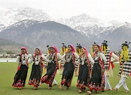

|
 |
Himachal Pradesh still retains its traditional appeal and celebrates the major fairs and festivals with the accompaniment of Performing Arts of Himachal Pradesh. This brings in new color to the richly hued fairs and festivals. Nati-Folk Dance in Himachal Pradesh is one among them. Mainly celebrated with the Losai or the New Year Festival, Nati as a Performing Art in Himachal Pradesh has a languid yet abstract sequence. Much like the slowly swaying trees, soft hilly breeze and smoothly flowing rivers, this dance too reflects the languid elegance of Himachal Pradesh. |